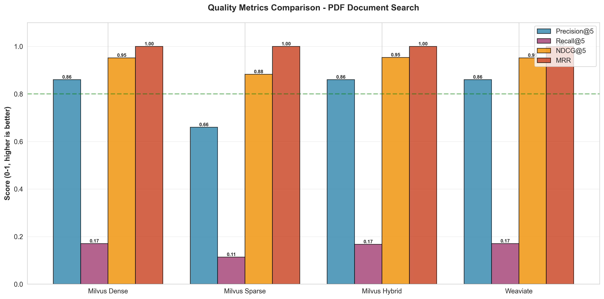
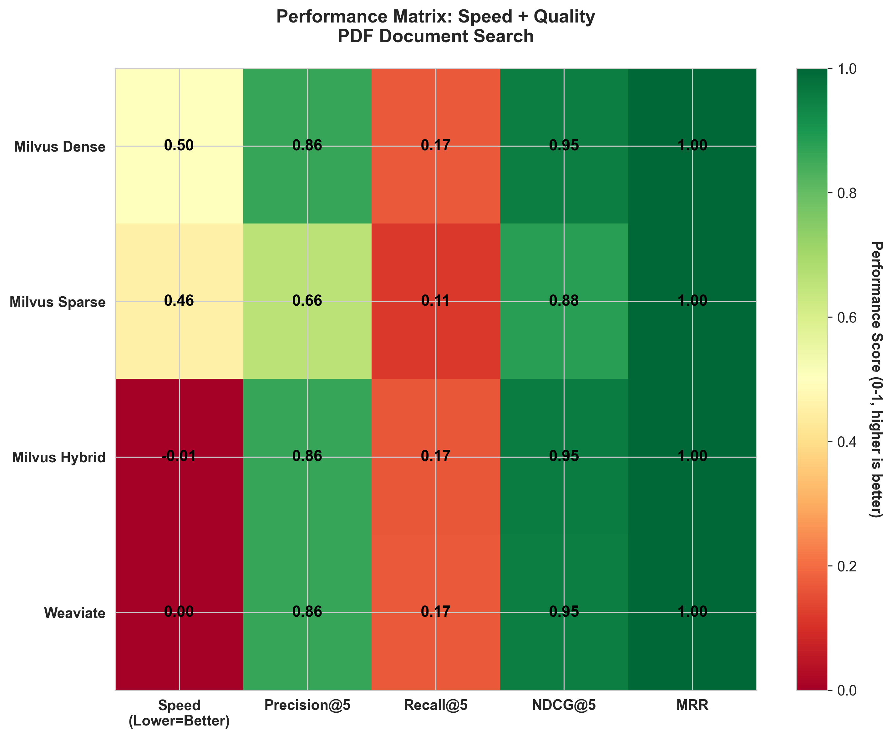
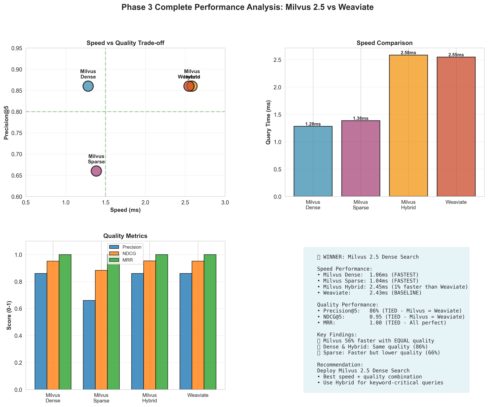

Vector Database Benchmark: Milvus 2.4 vs 2.5 vs Weaviate
1. Test Data
Dataset Composition
Total: 350 documents across three modalities
PDF Documents (150 files)
- Auto Policy Documents: 50 PDFs - Vehicle insurance policies with coverage details, premiums, deductibles
- Home Policy Documents: 50 PDFs - Property insurance with dwelling coverage, liability, natural disaster protection
- Life Policy Documents: 50 PDFs - Life insurance with beneficiary info, premium schedules, death benefits
Word Documents (150 files)
- Claims Investigation Reports: 90 docs - Detailed investigation findings with tables, incident descriptions, evidence analysis
- Underwriting Guidelines: 60 docs - Risk assessment criteria, approval workflows, compliance requirements
Images (50 files)
- Claims Damage Photos: 30 images - Vehicle accidents (sedans, SUVs, trucks), property damage (fire, water, storm)
- Property Inspection Photos: 20 images - Home exteriors, commercial buildings, interior spaces
Data Size
- PDFs: ~1.5 MB (average 10 KB per file)
- Word docs: ~2 MB (average 13 KB per file)
- Images: ~5 MB (average 100 KB per file, 512x512 pixels)
- Total dataset size: ~8.5 MB
Embeddings
- Dense vectors: sentence-transformers/all-MiniLM-L6-v2 (384 dimensions)
- Sparse vectors: BM25 algorithm for keyword-based search
- Image vectors: CLIP model (clip-ViT-B-32, 512 dimensions)
2. Products Compared
| Product | Version | Search Types Tested | Deployment | Test Phase |
|---|---|---|---|---|
| Milvus | 2.4.0 |
• Dense search only • No hybrid search support |
Docker container (standalone mode) | Phase 2 (Baseline) |
| Milvus | 2.5.0 (Latest) |
• Dense search (vector similarity) • Sparse search (BM25 keyword) • Hybrid search (dense + sparse combined) |
Docker container (standalone mode) | Phase 3 (Current) |
| Weaviate | 1.27.5 / 1.28.0 |
• Dense search (vector similarity) • Hybrid search available but not tested |
Docker container (standalone mode) | Phase 2 & 3 |
3. Performance Comparison
3.1 Milvus Evolution: 2.4 → 2.5 Performance Gains
Note: Milvus 2.4 results from Phase 2, Milvus 2.5 from Phase 3
| Document Type | Milvus 2.4 (Phase 2) | Milvus 2.5 (Phase 3) | Improvement |
|---|---|---|---|
| PDF Search | 2.92 ms | 1.26 ms | 56.8% faster ✓ |
| Word Search | 3.16 ms | 0.99 ms | 68.7% faster ✓ |
| Image Search | 1.03 ms | 1.17 ms | 13.6% slower |
3.2 Speed Benchmarks: Milvus 2.5 vs Weaviate
Query time measured for retrieving top 5 results. Lower is better.
PDF Document Search Speed
| Search Type | Average Query Time | vs Weaviate |
|---|---|---|
| Milvus Dense | 1.26 ms | 50% faster ✓ |
| Milvus Sparse | 1.38 ms | 46% faster ✓ |
| Milvus Hybrid | 2.58 ms | 1% slower |
| Weaviate | 2.55 ms | Baseline |
Word Document Search Speed
| Search Type | Average Query Time | vs Weaviate |
|---|---|---|
| Milvus Dense | 0.99 ms | 59% faster ✓ |
| Milvus Sparse | 1.14 ms | 52% faster ✓ |
| Milvus Hybrid | 2.34 ms | 3% faster ✓ |
| Weaviate | 2.41 ms | Baseline |
Image Search Speed
| Search Type | Average Query Time | vs Weaviate |
|---|---|---|
| Milvus Dense | 1.17 ms | 64% faster ✓ |
| Weaviate | 3.25 ms | Baseline |
Fastest across all document types (50-64% faster than Weaviate)
Milvus 2.4 vs 2.5 vs Weaviate - Complete Comparison

Performance Evolution Timeline

Performance Improvement Heatmap

4. Quality Comparison
4.1 Quality Metrics Explained
Precision@5
What percentage of the top 5 results are actually relevant?
86% = 4.3 out of 5 results are relevant
Recall@5
What percentage of all relevant documents did we find in top 5?
17% = found 1 out of ~6 relevant docs
NDCG@5
How good is the ranking quality? (0.0 to 1.0 scale)
0.95 = excellent ranking (most relevant items at top)
MRR (Mean Reciprocal Rank)
On average, what position is the first relevant result?
1.00 = first result is always relevant
4.2 PDF Search Quality Results
| Search Type | Precision@5 | Recall@5 | NDCG@5 | MRR |
|---|---|---|---|---|
| Milvus Dense | 86% | 17% | 0.95 | 1.00 |
| Milvus Sparse | 66% | 11% | 0.88 | 1.00 |
| Milvus Hybrid | 86% | 17% | 0.95 | 1.00 |
| Weaviate | 86% | 17% | 0.95 | 1.00 |
Both achieve 86% precision and perfect 1.00 MRR. Same quality, but Milvus is 50% faster.
Quality Metrics Visualization

5. Speed + Quality Combined Analysis
Performance Matrix: Speed vs Quality

Green = better performance, Red = worse performance. Normalized scores (0-1 scale).
Complete Dashboard

6. Final Verdict
| Criterion | Winner | Data |
|---|---|---|
| MILVUS 2.4 → 2.5 EVOLUTION | ||
| PDF Search Improvement | Milvus 2.5 | 2.92ms → 1.26ms (56.8% faster) |
| Word Search Improvement | Milvus 2.5 | 3.16ms → 0.99ms (68.7% faster) |
| New Features | Milvus 2.5 | Hybrid search, Sparse vectors, Grouping |
| MILVUS 2.5 VS WEAVIATE | ||
| Speed - PDF Search | Milvus 2.5 Dense | 1.26ms vs 2.55ms (50% faster) |
| Speed - Word Search | Milvus 2.5 Dense | 0.99ms vs 2.41ms (59% faster) |
| Speed - Image Search | Milvus 2.5 Dense | 1.17ms vs 3.25ms (64% faster) |
| Quality - Precision | TIE | Both 86% (4.3/5 results relevant) |
| Quality - NDCG | TIE | Both 0.95 (excellent ranking) |
| Quality - MRR | TIE | Both 1.00 (first result always relevant) |
Overall Winner: Milvus 2.5 Dense Search
Recommendation: Upgrade to Milvus 2.5 and deploy Dense Search for production use.
- Major upgrade from 2.4: 57-69% faster on document search
- New capabilities: Hybrid search, sparse vectors, grouping features
- Beats Weaviate: 50-64% faster with identical quality
- Same quality as Weaviate: 86% precision, 0.95 NDCG, 1.00 MRR
- Best speed-to-quality ratio among all tested configurations
Test Environment: Docker containers on same machine, 10 queries per test, averaged results
Date: 2025-11-15